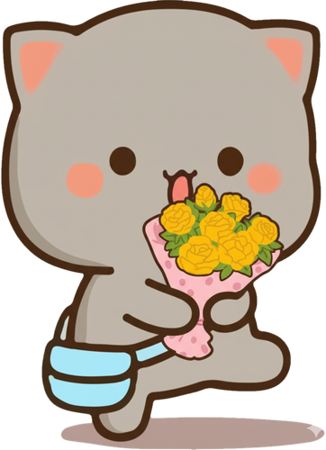

Toca la carta para abrirla 🌻
Para: Usted
De: Anónimo

Para alguien que merece que le recuerden, de vez en cuando, lo mucho que vale. 🌻
Sé que cada día trae sus propias cosas, pero aun así sigues avanzando, haciendo lo que puedes y dando un poquito más de ti. Quizás para ti sean cosas normales, pero creo que también hay mucho valor en eso: en seguir, en no quedarse atrás y en continuar construyendo poco a poco lo que quieres para ti.
No hace falta tener todo resuelto ni que todo salga perfecto. A veces, simplemente seguir intentando ya dice bastante.
Así que espero que sigas adelante, a tu manera y a tu propio ritmo, y que nunca olvides que todo lo que haces también tiene un significado, incluso esas pequeñas cosas que quizás nadie más nota.
Y bueno... solo quería dejarte esto para que lo recuerdes cuando lo necesites. 🌻
